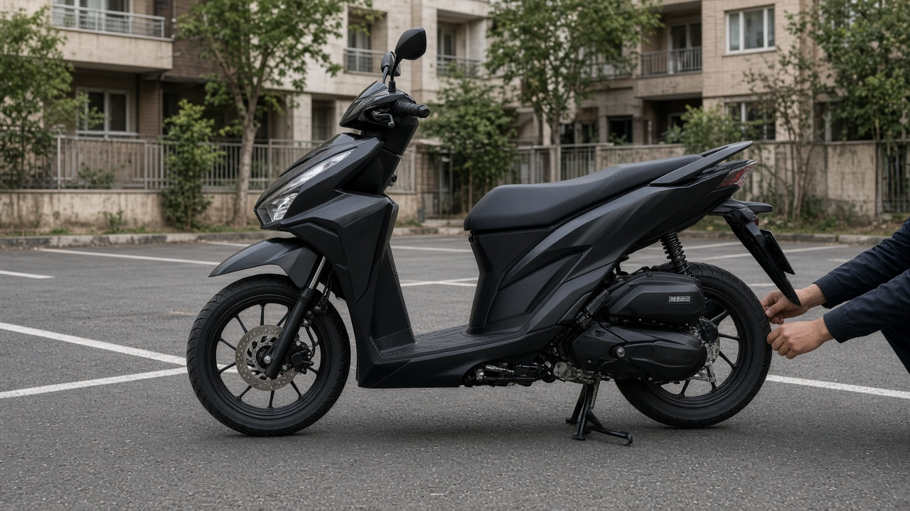
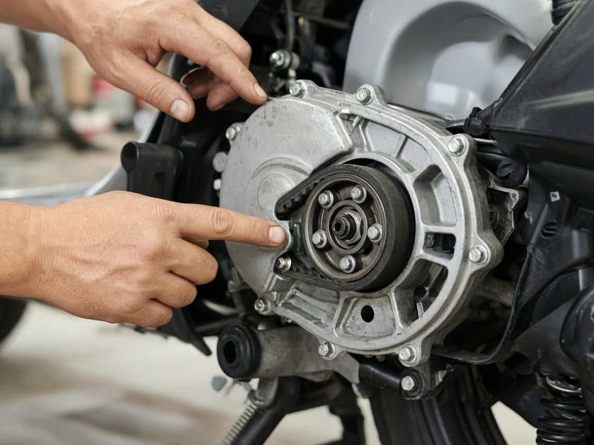
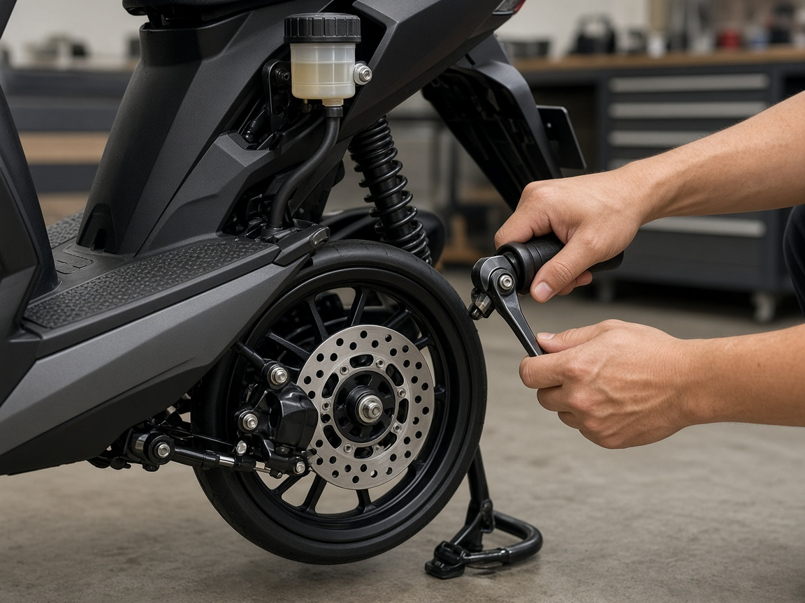
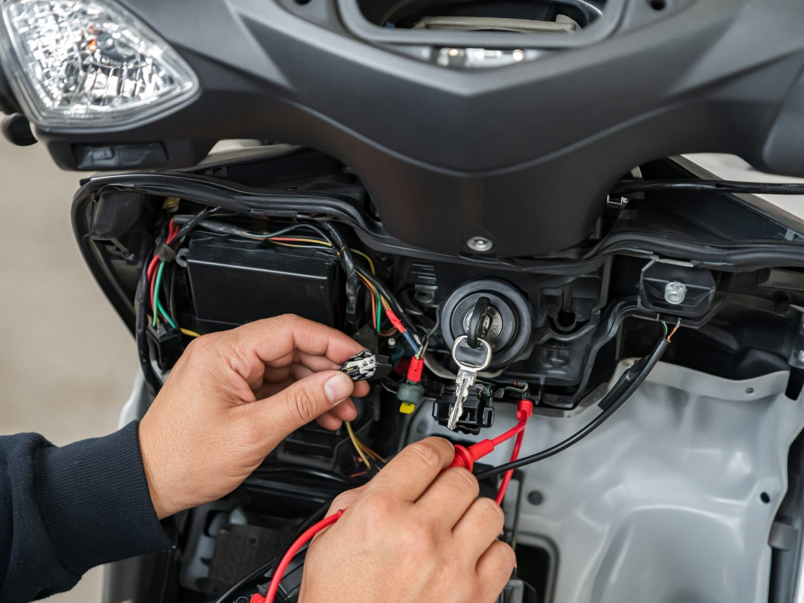
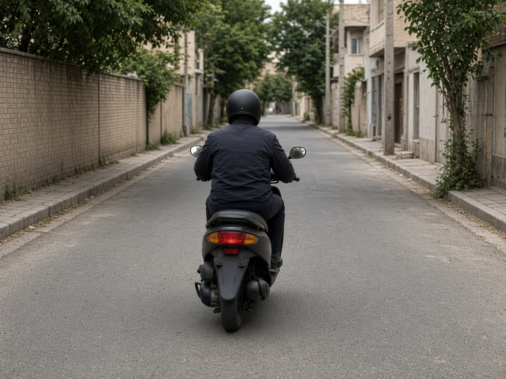
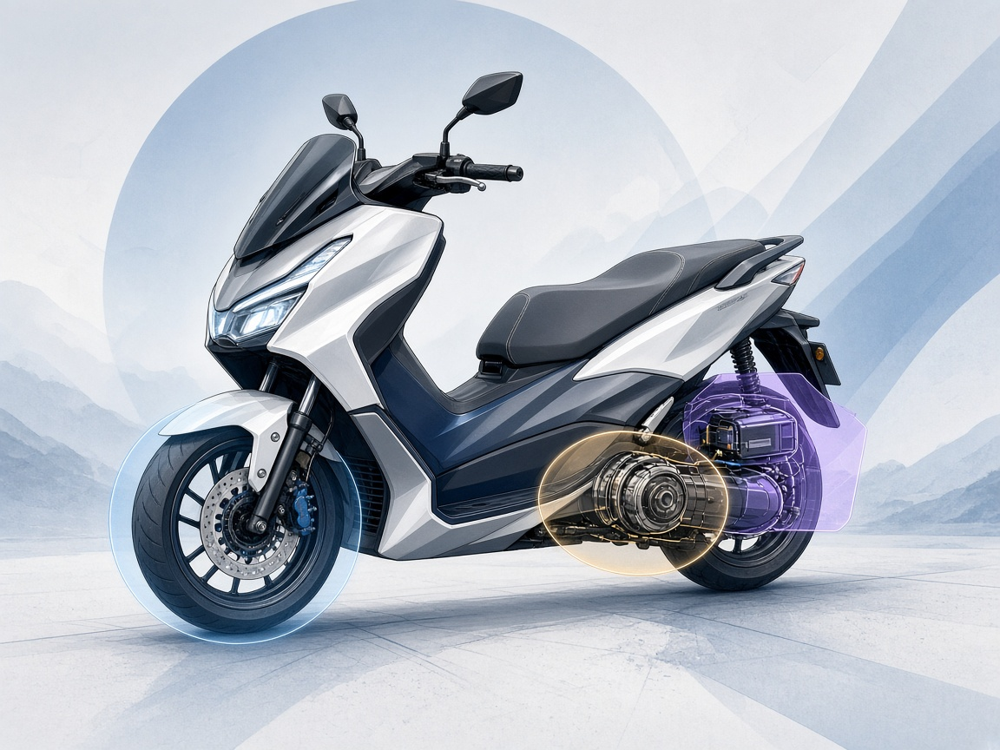

اسکوتر اتوماتیک کارکرده بخریم؟ در کارشناسی انتقال قدرت، ترمز و برق چه بررسی می شود؟
تبلیغ فروشنده می گوید اسکوتر فقط برای رفت و آمد اداری کار کرده، اما وقتی دستگاه را روشن می کنید موتور نرم است و شتاب اول خوب به نظر می رسد. نکته مهم اینجاست که در اسکوتر اتوماتیک، سلامت انتقال قدرت، ترمز و برق در سطح آسفالت و با بار واقعی فاش می شود؛ نه فقط در چند دقیقه دور زدن جلوی درب.
خرید اسکوتر اتوماتیک کارکرده منطقی است اگر پیش از معامله انتقال قدرت، ترمز و برق را دقیق ببینید. در کارشناسی، CVT و تسمه، کلاچ، ترمز جلو و عقب و مدار شارژ و روشنایی با تست رانندگی سنجیده میشوند. لغزش گیربکس، ترمز کشنده یا چراغ کمنور، معمولاً بهتر است معامله را متوقف یا قیمت را واقعی کند.
خلاصه در یک دقیقه
- اسکوتر اتوماتیک به خاطر CVT به سرویس منظم تسمه و غلطکها حساس است؛ بیتوجهی به این بخش، هزینه پنهان معامله است.
- در کارشناسی انتقال قدرت، صدای وزوز، شتاب پلکانی و لرزش زیر بدنه نشانههایی هستند که با تست کوتاه هم دیده میشوند.
- ترمز باید بدون کشیدن موتور به یک سمت، توقف خطی و بدون صدای فلزی ایجاد کند؛ روغن ترمز و لنت از نادیده گرفته شدنیترین موارد هستند.
- برق ضعیف از شارژ تا سیمکشی تحتالارضی، میتواند روشنایی، استارت و ایمنی شب را به خطر بیندازد.
- اگر سابقه تصادف یا رنگ کلی بدنه مطرح است، بررسی شاسی و اتصالات را جدی بگیرید؛ برای دوچرخ موتوری هم بدنه بر ایمنی اثر دارد.
فرض کنید برای دیدن یک اسکوتر ۱۲۵ یا ۱۵۰ سیسی کارکرده به محل فروشنده رفتهاید. روی بدنه خط و خش عادی دارد و فروشنده می گوید «فقط شهری رفته». برای بسیاری از خریدارها در ایران، اسکوتر اتوماتیک به خاطر راحتی رانندگی در ترافیک و نبودن کلاج دستی، گزینه جذابی است؛ از مدلهای رایج وارداتی گرفته تا برخی برندهای مونتاژی که در بازار دستدوم دیده میشوند.
با این حال تفاوت بین یک دستگاه سرویسشده و یک دستگاه فرسوده در ظاهر پلاک هم گاهی کم است. اگر قصد معامله جدی دارید، مراجعه به کارماچک یا هر مرجع کارشناسی معتبر میتواند قبل از پرداخت بیعانه، تصویر روشنتری از وضعیت فنی بدهد. مقاله حاضر توضیح میدهد در بخش انتقال قدرت، ترمز و برق دقیقاً دنبال چه چیزهایی میگردند و شما به عنوان خریدار چه نشانههایی را میتوانید خودتان هم ببینید.
آیا خرید اسکوتر اتوماتیک کارکرده ارزش دارد؟
جواب کوتاه: بله، به شرطی که بدانید برای چه مسیری میخواهید از آن استفاده کنید و قبل از معامله وضعیت CVT، ترمز و برق را جدی بگیرید. اسکوتر اتوماتیک در شهر برای راننده کمتجربه یا کسی که نمیخواهد مدام کلاچ بگیرد، انتخاب عملی است؛ اما گیربکس بیدرنگ (CVT) و سیستم خنککاری و تسمه در مقایسه با موتورهای دندهای ساده، نگهداری تخصصیتری میطلبد.
از طرف دیگر بازار دستدوم پر از موتورهایی است که با روغن ارزان، تسمه دیرموقع تعویضشده یا ترمز تقلبی چرخیدهاند. اگر فقط به ظاهر بدنه و صدای موتور در حالت سکون اکتفا کنید، احتمال دارد هفتهها بعد در اولین سربازی یا بارگیری سبک، لغزش یا افت شتاب را ببینید. برای مقایسه ذهنی: خودروی دستدوم هم همین است؛ ظاهر تمیز جای سلامت فنی را نمیگیرد.

در کارشناسی انتقال قدرت چه چیزهایی دیده می شود؟
در اسکوتر اتوماتیک، انتقال قدرت عمدتاً از طریق CVT و تسمه انجام میشود. کارشناس معمولاً ابتدا سرویسهای دورهای را از روی دفترچه یا فاکتورها میخواند؛ اگر سابقه نباشد، وارد بررسی فیزیکی و تست عملی میشود.
بررسی تسمه، واریاتور و غلتک ها
باز کردن کاور CVT در صورت امکان، امکان دیدن ترک، سایش نامتقارن یا ذرات لاستیک داخل محفظه را میدهد. نشانه بیرونی لغزش میتواند بوی سوختگی لاستیک از واریاتور یا تجمع ذرات سیاه باشد. این موارد به تنهایی حکم نهایی نیستند، اما برای تصمیم قیمت یا درخواست تعویض تسمه قبل از معامله کافیاند.
کلاچ و شفت محرک
در بسیاری از اسکوترها کلاچ خشک جلو نیروی انتقال را از موتور به گیربکس میرساند. کشیدگی بیش از حد کلاچ، صدا در شروع حرکت یا نیاز به دستگاه ثابت برای حرکت اولیه از علائمی است که در تست آرام هم دیده میشود. کارشناس به اختلاف بین دور موتور بالا و سرعت واقعی چرخ هم توجه میکند.
روغن موتور و خنک کاری
سطح روغن، رنگ و بو نشان میدهد آیا سرویس به موقع انجام شده یا خیر. در موتورهای دو زمانه خبر متفاوتی است؛ برای چهار زمانههای رایج اسکوتر، روغن تیره و غلیظ یا کف سفید در نشتی آبرادیاتور باید پیگیری شود. گرم شدن غیرعادی در تست چند دقیقهای، میتواند به مشکل خنککاری یا تنظیم احتراق اشاره کند.
- صدای وزوز یا تیکتیک با افزایش گاز در محدوده CVT
- شتاب پلکانی به جای افزایش نرم دور
- لرزش محسوس زیر قوزک در سرعت ثابت شهری
- دیر engage شدن از حالت خنثی به حرکت
برای درک ساختار کلی بررسیهای فنی، صفحه کارشناسی فنی و بدنه خودرو را ببینید. فرآیند گزارشدهی مشابه است؛ فقط چکلیست برای موتورسیکلت روی اجزای انتقال قدرت متمرکز میشود.
پیش از معامله، وضعیت فنی را روشن کنید
اگر درباره CVT، ترمز یا برق اسکوتر مطمئن نیستید، کارشناسی خودرو و موتور توسط کارشناس میتواند قبل از بیعانه، تصویر روشنتری از سلامت دستگاه بدهد.
شروع کارشناسی خودروکارشناسی ترمز اسکوتر شامل چه مواردی است؟
ترمز نامناسب در موتور خطر جدیتری از خودرو دارد، چون تعادل و محافظ جانبی محدودتر است. کارشناس ترمز جلو و عقب را جداگانه ارزیابی میکند؛ بسیاری از اسکوترها ترمز جلو دیسکی و عقب کاسهای یا دیسکی دارند.

لنت، دیسک و کاسه
ضخامت لنت و صافی دیسک از طریق بازدید چشمی و حرکت دستگاه قابل بررسی است. شیار عمیق روی دیسک، لرزش دسته ترمز یا صدای سوت مداوم معمولاً فرسودگی یا آلودگی سطح را نشان میدهد. در ترمز عقب، تنظیم کابل و آزاد بودن کاسه باید دیده شود.
سیال ترمز و سیلندرها
سطح مایع ترمز و نشت از دور Master Cylinder یا شیلنگها بررسی میشود. مایع تیره یا سطح پایین نشانه نیاز به سرویس است. هوا در سیستم معمولاً دسته ترمز را اسفنجی میکند و مسیر طولانیتری برای توقف کامل میطلبد.
بررسی برق و روشنایی چه نشانه هایی دارد؟
سیستم برق اسکوتر از باتری، رگولاتور شارژ، سیمکشی، فیوزها، کلیدها و مصرفکنندهها مثل چراغ و استارت تشکیل شده است. ضعف این بخش در رانندگی شهری شاید کمرنگ باشد، اما در شب یا سردی هوا مشکلساز میشود.

کارشناس ولتاژ باتری در حالت استاتیک و با موتور روشن را اندازه میگیرد تا عملکرد شارژ مشخص شود. چراغ جلو و عقب، راهنماها و ترمز عقب از نظر شدت و همجهتی تست میشوند. سیمهای زیر بدنه که در اثر تکان به بدنه ساییده شدهاند، نقطهٔ شایع اتصال ضعیف یا اتصال کوتاه هستند.
اگر موتور استارت سنگین دارد یا چراغها هنگام کنش استارت کمنور میشوند، احتمال ضعف باتری یا رگولاتور مطرح است. این علائم را میشود با تعویض ساده باتری در ذهن راحت گذاشت؛ کارشناس تلاش میکند منبع اصلی را قبل از پیشنهاد هزینه مشخص کند.
چک لیست تست رانندگی قبل از معامله
تست رانندگی کوتاه و امن، بخشی از کارشناسی انتقال قدرت و ترمز است. بدون آن، برخی ایرادهای CVT یا لرزش ترمز پنهان میمانند.

- شروع حرکت:از سکون چند بار حرکت نرم انجام دهید؛ تعویض دیر یا ضربه اول نشانه کلاچ یا CVT است.
- شتاب میانی:در محدوده ۳۰ تا ۵۰ کیلومتر بر ساعت شتاب بگیرید؛ افت ناگهانی دور یا صدای غیرعادی را یادداشت کنید.
- ترمز تدریجی و اضطراری:ترمز را آرام و یکبار تند امتحان کنید؛ انحراف، قفل چرخ یا بو باید پیگیری شود.
- سرازیری ملایم:در شیب کوتاه بدون گاز ثابت بمانید؛ افزایش دور بدون افزایش سرعت نشانه لغزش است.
| نشانه در تست | احتمال فنی | اقدام پیشنهادی |
|---|---|---|
| دور بالا، سرعت کم | لغزش تسمه یا فرسودگی واریاتور | بازدید CVT یا قیمتگذاری با احتساب تعمیر |
| لرزش دسته ترمز | دیسک ناصاف یا لنت نامتجانس | تعویض یا تراش دیسک قبل از تحویل |
| چراغ کمنور با موتور روشن | ضعف شارژ یا اتصال شل | بررسی رگولاتور و سیمکشی |
برای آشنایی با گزارشهای بیشتر درباره معاملات دستدوم، میتوانید مجله کارماچک را هم مرور کنید.
چه زمانی از خرید منصرف شویم؟
هیچ لیست قطعی وجود ندارد، اما ترکیب چند نشانه جدی معمولاً بهتر است با توقف معامله همراه شود تا کاهش قیمت سطحی.
- نشت روغن شدید از موتور یا گیربکس بدون توضیح شفاف تعمیر
- صدای تقتق یا ضربهای از داخل کاور CVT در شتاب
- ترمز که حتی پس از پمپ دستی به سختی محکم میشود
- سیمکشی دستی و غیراستاندارد دور باتری یا فیوز
- اختلاف سریال موتور و شاسی با مدارک

کارماچک خدمات کارشناسی خودرو را برای بررسی فنی، رنگ، بدنه و عوامل مؤثر بر ارزش معامله ارائه میدهد. فقط ایراد خودرو را شناسایی نمیکنیم؛ اثر آن روی هزینه تعمیر و ارزش واقعی معامله را هم مشخص میکنیم.
جمع بندی
اسکوتر اتوماتیک کارکرده میتواند خرید عاقلانهای باشد اگر انتقال قدرت، ترمز و برق را مثل سه ستون اصلی ببینید نه جزئیات فرعی. از تسمه CVT تا روغن ترمز و ولتاژ شارژ، هر کدام در تست کوتاه رانندگی رفتار خود را نشان میدهند. خیلی از خریدارها فقط به رنگ بدنه و صدای موتور درجا نگاه میکنند؛ در حالی که هزینههای پنهان اغلب پشت همین سه بخش پنهان است.
قبل از امضای قولنامه یا پرداخت بیعانه، اگر شک دارید، قیمتگذاری خودرو و موتور با احتساب ایرادهای احتمالی میتواند دامنه معقول معامله را روشن کند؛ حتی وقتی موضوع شما خودرو سواری نیست و سراغ اسکوتر یا موتورسیکلت رفتهاید.
قدم بعدی برای معامله امن تر
برای ثبت درخواست بازدید میدانی و گزارش فنی، از مسیر رزرو کارشناسی استفاده کنید.
ثبت درخواست کارشناسیسؤالات متداول
هر چند وقت باید تسمه CVT اسکوتر عوض شود؟
فاصله دقیق به مدل، حجم موتور و سبک رانندگی بستگی دارد و یک عدد برای همه برندها درست نیست. اگر فاکتور تعویض ندارید، نشانههای لغزش در تست رانندگی مهمتر از حدس بر اساس کارکرد است.
آیا میتوان سلامت CVT را بدون باز کردن کاور فهمید؟
بخشی بله؛ شتاب پلکانی، بو سوختگی و صدای واریاتور در تست اولیه دیده میشود. با این حال بازدید داخل محفظه برای تشخیص سایش قطعی مفیدتر است و کارشناس در صورت دسترسی آن را انجام میدهد.
ترمز عقب اسکوتر کمتر مهم است؟
نه؛ در توقف اضطراری توزیع نیرو بین جلو و عقب مهم است. ضعف ترمز عقب میتواند پایداری موتور را کم کند؛ هر دو طرف باید در کارشناسی دیده شوند.
ضعف چراغ با موتور روشن حتماً رگولاتور خراب است؟
همیشه نه؛ اتصال شل، باتری فرسوده یا فیوز سوخته هم همین علامت را میدهند. اندازهگیری ولتاژ تحت بار روش سادهتری برای تفکیک اولیه است.
کارکرد پایین یعنی CVT سالم است؟
کارکرد کم ضمانت سلامت نیست؛ اسکوتری که سالها کمکار مانده ممکن است روغن کهنه یا باتری ضعیف داشته باشد. تست عملی و سابقه سرویس مکمل همکارکرد هستند.
قبل از خرید اسکوتر کارکرده حتماً کارشناسی لازم است؟
برای معامله با مبلغ جدی، کارشناسی ریسک را کم میکند؛ مخصوصاً وقتی تجربه فنی محدود دارید. حداقل چکلیست تست رانندگی و مدارک را خودتان جدی بگیرید.